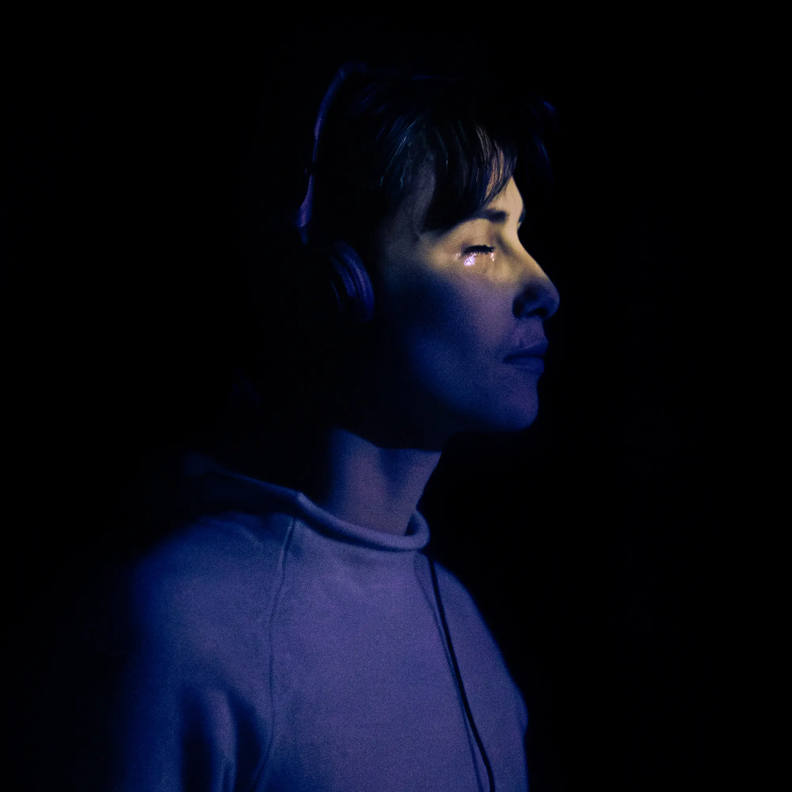

Les Naufragés
Performance collective & Son Immersif
Mon rôle : Sound Design, Composition musicale
Les Naufragés est une auto-performance de 40 minutes pour 30 participants qui conjugue son immersif et ambiance lumineuse pour proposer un voyage dans un pays des ombres inspiré du Butoh.
Les participants sont guidés par une voix intérieure grâce à un casque audio et un son binaural. Cette voix raconte un voyage différent à chaque participant, et chacun découvre comment les actions des autres complètent les siennes. Autant de petits gestes que leur groupe inventera pour se raconter, ensemble, que les fantômes existent.

Le sound design dessine les différents paysages que les participants seront amenés à traverser. Grâce à des timings minutieusement calculés, les effets sonores binauraux viennent compléter l'expérience sensible des participants en les accompagnant dans leurs gestes et dans leurs actions.
La composition musicale accompagne les participants tant dans leur intimité émotionnelle grâce à des étirements de texture épurée, que dans une énergie collective grâce à des rythmiques hypnotiques et fédératrices.
L'expérience a été présentée dans différents lieux comme le CentQuatre, le Lavoir Moderne, Anis Gras ou encore la Tour de la Chaîne.
Crédits
- Écriture et mise en scène
- Sam Lecoeur
- Production
- Rémi Large
- Sound Design
- Jean Le Bellego
- Composition Musicale
- Jean Le Bellego
- Lumières
- Paolo Morvant